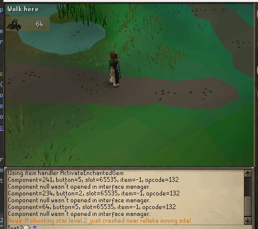

We are now in the month of August and if you notice our website's banner has now changed like it does every
month but thought I would point this out. We can thank Michael Carrot for the banners. I am excited to say that
despite a quieter week we still have some fantastic updates. So lets check them out! Before we do, I would like to
give a shout out to one of the M-Gang members Moukanubi for beating the fight cave and getting the fire cape!
This week on Legacy, we are looking at a whole lot added to our slayer skill. Do not worry! it is still the slayer
you know & love the skill itself has not changed.
Slayer Skill Cape Perk
"As a grizzled slayer, you know preparation is key to confronting Gielinor's worst. The crafts of the Slayer Helmet
has inspired you to hone your equipment and keep all of your tools close to you, within your cloak."
Players that have learned how to craft a 'Slayer Helmet' may choose to consume a 'Slayer Helmet' to
apply its utilities: 'Nose peg', 'Earmuffs', 'Facemask', 'Spiny Helmet', and 'Black mask' at half its slayer
task bonus damage while the skillcape is equipped.
Do note that this will be applied permanently to the cape until lost, bonuses do not stack with a 'Slayer Helmet'.
Slayer Improvements
Reworked how slayer stores and manipulates data to use bitflags (Andrew Gower would be proud), and
reworked the slayer task tracker completely.
We have also lowered the slayer rerolls to only 10 a day since they took a bit of the game out of Slayer.

As you can see a way neater and better looking design than before and improvements on functionality!
No longer in the weeds
Another amazing update this week was the improvements on farming. I know there have been some issues
but no worries they have all been patched. Fun fact if you were under level 15 farming and stood next
to a patch too long a NPC would come out and let you know that you did not need to stand next to the patch
in order for it to grow!
- Added exactly just that! The npc that comes out of nowhere and lets you know you can do other things while waiting for crops.
- Refactored crop harvesting to use the authentic lives system
- Herbs now should give perfectly authentic harvest amounts
- Corrected how Herb disease and death is handled and set.
- Implemented Spirit Weed
- Allotments, Hops, Belladonna and Cacti should now give closer-to-authentic amounts.
- Added a ContentAPI method for poof-clearing an NPC (think random event NPCs)
- Supercompost now increases a crop's lives by 2, and regular compost by 1.
Dwarves, Cakes, and Randoms
This week we give you pvm folks something you have been waiting for and hope you choose to use! amd
- Added temporary ground item spawn for Dwarven rock cake to the underground pass underneath White Wolf Mountain (Requires completion of Fishing Contest to access)
- Added examines to both the hot and cold Dwarven rock cakes
- Added the authentic two Dwarven Stout ground item spawns to the underground pass beneath White Wolf Mountain
- Populated the underground pass beneath White Wolf Mountain with all of its generic unnamed Dwarf NPCs
- Stat corrections for the Combat-lvl 20 Dwarf
- Added Sandwich lady examine
- Fixed issue where cert random event wouldn't give a reward if your inventory was full.
Summoning Scrolls
This week summoning scrolls got some love with some changes that everyone can appreciate!
- All summoning scrolls now have correct examines
- All summoning scrolls are now correctly tradeable
- Dreadfowl strike scroll requirements fixed (now correctly requires 4 Summoning)
- Egg spawn scroll requirements fixed (now correctly requires 10 Summoning)
- Venom shot scroll requirements fixed (now correctly requires 19 Summoning)
- Slime spray scroll requirements fixed (now correctly requires 13 Summoning)
- Electric lash scroll requirements fixed (now correctly requires 18 Summoning)
- Stony shell scroll requirements fixed (now correctly requires 16 Summoning)
- Pester scroll requirements fixed (now correctly requires 17 Summoning)
- Fireball assault scroll requirements fixed (now correctly requires 22 Summoning)
- Rise from the ashes scroll requirements fixed (now correctly requires 72 Summoning)
Misc Fixes
- Fixed a dupe in the warrior's guid
- The Tzhaar rune shop now buys chaos runes at 13ea and death runes at 27ea
- Can no longer wear standard, (g), (t) or god rune platebodies/dragonhide bodies without having done dragon slayer.
- Fixed an exploit relating to herb cleaning
- Many improvements to server stability
- Fixed an issue that stopped random event NPCs from terminating properly
- Tiadeche's karambwan shop has been added to the game
- Penguins will now reset on Mondays (though not today!)
- Reworked some of the signs in the gameworld like the lumbridge cow/church signs to be more authentic and persist across reboots.
- The ability to harvest sq'irks has been restored
- The teleport crystal has been disabled
 Up to Legacy Update List
Up to Legacy Update List Refresh
Refresh Summer
Summer